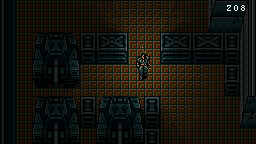

Overview
For BUAS block A we needed to recreate the original metal gear in C++.
We were also not allowed to use any standard library features for this project.
For this remake I wanted some extra challenge so I decided to add a 2D pathtracer to the
project.
I'll only talk about the raytracer here.
